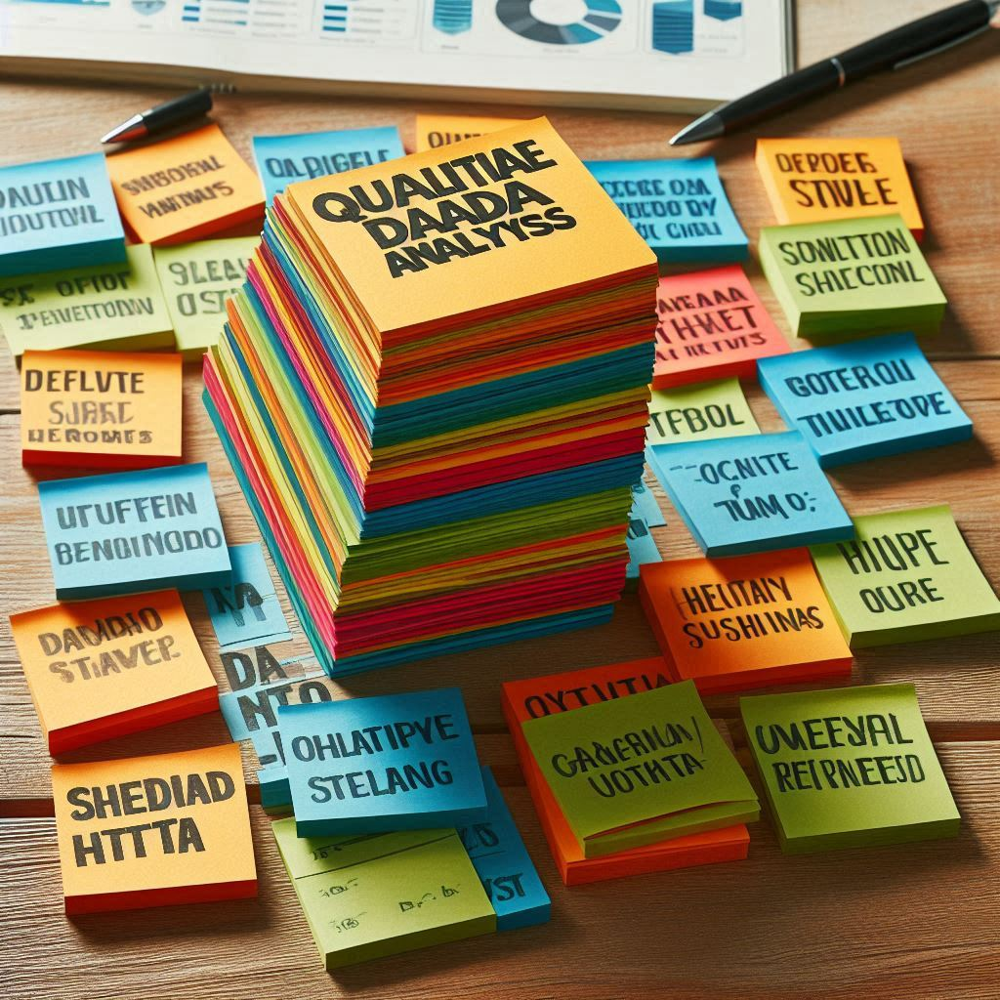

ID SurveyYr Gender Age AgeDecade AgeMonths Race1 Race3 Education
1 51624 2009_10 male 34 30-39 409 White <NA> High School
2 51624 2009_10 male 34 30-39 409 White <NA> High School
3 51624 2009_10 male 34 30-39 409 White <NA> High School
4 51625 2009_10 male 4 0-9 49 Other <NA> <NA>
5 51630 2009_10 female 49 40-49 596 White <NA> Some College
6 51638 2009_10 male 9 0-9 115 White <NA> <NA>
MaritalStatus HHIncome HHIncomeMid Poverty HomeRooms HomeOwn Work
1 Married 25000-34999 30000 1.36 6 Own NotWorking
2 Married 25000-34999 30000 1.36 6 Own NotWorking
3 Married 25000-34999 30000 1.36 6 Own NotWorking
4 <NA> 20000-24999 22500 1.07 9 Own <NA>
5 LivePartner 35000-44999 40000 1.91 5 Rent NotWorking
6 <NA> 75000-99999 87500 1.84 6 Rent <NA>
Weight Length HeadCirc Height BMI BMICatUnder20yrs BMI_WHO Pulse BPSysAve
1 87.4 NA NA 164.7 32.22 <NA> 30.0_plus 70 113
2 87.4 NA NA 164.7 32.22 <NA> 30.0_plus 70 113
3 87.4 NA NA 164.7 32.22 <NA> 30.0_plus 70 113
4 17.0 NA NA 105.4 15.30 <NA> 12.0_18.5 NA NA
5 86.7 NA NA 168.4 30.57 <NA> 30.0_plus 86 112
6 29.8 NA NA 133.1 16.82 <NA> 12.0_18.5 82 86
BPDiaAve BPSys1 BPDia1 BPSys2 BPDia2 BPSys3 BPDia3 Testosterone DirectChol
1 85 114 88 114 88 112 82 NA 1.29
2 85 114 88 114 88 112 82 NA 1.29
3 85 114 88 114 88 112 82 NA 1.29
4 NA NA NA NA NA NA NA NA NA
5 75 118 82 108 74 116 76 NA 1.16
6 47 84 50 84 50 88 44 NA 1.34
TotChol UrineVol1 UrineFlow1 UrineVol2 UrineFlow2 Diabetes DiabetesAge
1 3.49 352 NA NA NA No NA
2 3.49 352 NA NA NA No NA
3 3.49 352 NA NA NA No NA
4 NA NA NA NA NA No NA
5 6.70 77 0.094 NA NA No NA
6 4.86 123 1.538 NA NA No NA
HealthGen DaysPhysHlthBad DaysMentHlthBad LittleInterest Depressed
1 Good 0 15 Most Several
2 Good 0 15 Most Several
3 Good 0 15 Most Several
4 <NA> NA NA <NA> <NA>
5 Good 0 10 Several Several
6 <NA> NA NA <NA> <NA>
nPregnancies nBabies Age1stBaby SleepHrsNight SleepTrouble PhysActive
1 NA NA NA 4 Yes No
2 NA NA NA 4 Yes No
3 NA NA NA 4 Yes No
4 NA NA NA NA <NA> <NA>
5 2 2 27 8 Yes No
6 NA NA NA NA <NA> <NA>
PhysActiveDays TVHrsDay CompHrsDay TVHrsDayChild CompHrsDayChild
1 NA <NA> <NA> NA NA
2 NA <NA> <NA> NA NA
3 NA <NA> <NA> NA NA
4 NA <NA> <NA> 4 1
5 NA <NA> <NA> NA NA
6 NA <NA> <NA> 5 0
Alcohol12PlusYr AlcoholDay AlcoholYear SmokeNow Smoke100 Smoke100n SmokeAge
1 Yes NA 0 No Yes Smoker 18
2 Yes NA 0 No Yes Smoker 18
3 Yes NA 0 No Yes Smoker 18
4 <NA> NA NA <NA> <NA> <NA> NA
5 Yes 2 20 Yes Yes Smoker 38
6 <NA> NA NA <NA> <NA> <NA> NA
Marijuana AgeFirstMarij RegularMarij AgeRegMarij HardDrugs SexEver SexAge
1 Yes 17 No NA Yes Yes 16
2 Yes 17 No NA Yes Yes 16
3 Yes 17 No NA Yes Yes 16
4 <NA> NA <NA> NA <NA> <NA> NA
5 Yes 18 No NA Yes Yes 12
6 <NA> NA <NA> NA <NA> <NA> NA
SexNumPartnLife SexNumPartYear SameSex SexOrientation PregnantNow
1 8 1 No Heterosexual <NA>
2 8 1 No Heterosexual <NA>
3 8 1 No Heterosexual <NA>
4 NA NA <NA> <NA> <NA>
5 10 1 Yes Heterosexual <NA>
6 NA NA <NA> <NA> <NA>المهارات الاحصائية في البحث العلمي
د. باسم بن صالح الصاعدي
2024-08-04
التفكير الاحصائي
التفكير الإحصائي هو هو طريقة منهجية للتفكير حول كيفية وصف العالم واستخدام البيانات لاتخاذ القرارات والتوقعات
يتم ذلك مع مراعاة العدم اليقين الذي يكمن في العالم الحقيقي .
أسس التفكير الإحصائي تستند بشكل أساسي إلى الرياضيات والإحصاء، ولكنها تستمد أيضًا من علوم الحاسوب وعلم النفس ومجالات دراسية أخرى .
الإحصاءات: تعني بشكل خاص بجمع وتنظيم وتحليل وتفسير وعرض البيانات .
التفكير الإحصائي يساعدنا على الإجابة على ذات الأسئلة التي يحاول الحدس البشري الإجابة عليها، لكن الحدس غالبًا ما يخطئ في الإجابة.
على سبيل المثال، في السنوات الأخيرة، يرى معظم الأمريكيين أن الجرائم العنيفة أسوأ مقارنة بالعام السابق (مركز بيو للأبحاث).
ومع ذلك، تُظهر تحليلات إحصائية للبيانات الفعلية أن جرائم العنف في الواقع انخفضت بشكل مستمر منذ التسعينيات.
يفشل الحدس لأننا نعتمد على تخميناتنا الأفضل (التي يشير إليها علماء النفس بأنها “الخوارزميات”)، والتي غالبًا ما تكون غير دقيقة. [بولدراك، 2019]
وظائف الاحصاء
- الوصف: العالم معقد ، نحتاج لوصفه بطريقة ميسره يمكننا فهمها.
- اتخاذ القرار: نحتاج إلى اتخاذ قرارات استنادًا على البيانات، خاصة في حالة عدم اليقين.
- التنبؤ: يساعد في التنبؤ بالحالات الجديدة استنادًا على معرفتنا بالحالات السابقة.
كيف نقرر ما هو الأكل الملائم لنا ؟

- هل الدهون المشبعة في نظامنا الغذائي شيء سيء؟
الطريقة الأولى للإجابة على هذا السؤال (استخدام المنطق). إذا أكلنا الدهون، فإنها ستتحول مباشرة إلى دهون في أجسامنا؟
طريقة أخرى للإجابة على هذا السؤال هي الاستماع إلى المؤسسات او الشخصيات المختصة. تشير إرشادات النظام الغذائي من إدارة الأغذية والعقاقير الأمريكية إلى أن “نمط الأكل الصحي يقلل من الدهون المشبعة”.
يبدو أن هذه التوصية بالذات تستند أكثر إلى معتقدات الباحثين في مجال التغذية بدلاً من الأدلة الفعلية.
الطريقة الثالثة هي النهج الإحصائي: ننظر إلى الأبحاث العلمية الفعلية.
دراسة بي يو ار PURE Study
135,000مشارك
18 دولة
سعى الباحثون الى تحليل كيفية ارتباط تناول فئات مختلفة من المغذيات الكبرى (بما في ذلك الدهون المشبعة والكربوهيدرات) باحتمال الوفاة خلال الوقت الذي تمت متابعة الأشخاص فيه.
راقب ولاحظ الباحثين، المشاركين في الدراسة اكثر من 8 سنوات
الشكل واضح جدًا: الأشخاص الذين تناولوا المزيد من الدهون المشبعة كانوا أقل عرضة للوفاة خلال الدراسة.
هذا المثال يوضح كيف يمكننا استخدام الإحصائيات لوصف مجموعة بيانات معقدة من خلال مجموعة أرقام أبسط بكثير.
إذا كان علينا النظر إلى بيانات كل مشارك في الدراسة في نفس الوقت، سنكون مثقلين بالبيانات. سيكون من الصعب أيضًا رؤية النمط الذي يظهر عندما يتم وصفها بشكل أبسط.
الأفكار الرئيسة في الإحصاء
التعلم من البيانات
التجميع أو تلخيص المتغيرات
عدم اليقين
أخذ عينة صحيحة من مجتمع الدراسة
السببية والإحصاء
التعلم من البيانات
إحدى الطرق التي يمكننا من خلالها التفكير في الإحصاءات هي أنها مجموعة من الأدوات التي تمكننا من التعلم من البيانات. وفي أي موقف، نبدأ بمجموعة من الأفكار أو الفرضيات حول ما قد يكون عليه الحال.
توفر لنا الإحصائيات طريقة لوصف كيفية استخدام البيانات الجديدة على أفضل وجه لتحديث معتقداتنا، وبهذه الطريقة توجد روابط عميقة بين الإحصائيات وعلم النفس.
التجميع أو تلخيص المتغيرات
- هناك طريقة أخرى للتفكير في الإحصاء وهي “علم التخلص من البيانات”.
- مثلا في الدراسة السابقة، بي يو ار، تمت دراسة اكثر من 100,000 متغير. لكن تم تجميعها وتلخيصها في النهاية الى 10 متغيرات.
عدم اليقين
فنحن نعلم الآن أن التدخين يسبب سرطان الرئة، ولكن هذا الارتباط احتمالي.
الرجل الذي يبلغ من العمر 68 عامًا والذي يدخن علبتين يوميًا على مدار الخمسين عامًا الماضية ويستمر في التدخين لديه خطر بنسبة 15% (1 من 7) للإصابة بسرطان الرئة، وهي نسبة أعلى بكثير من فرصة الإصابة بسرطان الرئة لدى غير المدخن.
أخذ عينة صحيحة من مجتمع الدراسة
- تقول فكرة أخذ العينات أننا نستطيع تلخيص مجتمع بأكمله بناءً على عدد صغير فقط من العينات من المجتمع، طالما تم الحصول على تلك العينات بالطريقة الصحيحة.
- فمثلا، في دراسة ال بي يو أر، حجم العينة حوالي 135000 شخص، لكن هدفها كان تقديم رؤى حول مليارات البشر الذين يشكلون السكان الذين تم أخذ عينات منهم

السببية والإحصاء
يبدو أن دراسة PURE قدمت أدلة قوية إلى حد ما على وجود علاقة إيجابية بين تناول الدهون المشبعة والعيش لفترة أطول، ولكن هذا لا يخبرنا بما نريد أن نعرفه حقًا: إذا تناولنا المزيد من الدهون المشبعة، فهل سيؤدي ذلك إلى عيشنا لفترة أطول؟
- والسبب في ذلك هو أننا لا نعلم ما إذا كانت هناك علاقة سببية مباشرة بين تناول الدهون المشبعة والعيش لفترة أطول.
على سبيل المثال، قد يتخيل البعض أن الأشخاص الأكثر ثراءً يتناولون المزيد من الدهون المشبعة، وأن الأشخاص الأغنى يميلون للعيش لفترة أطول. لكن طول حياتهم ليس بالضرورة بسبب تناول الدهون — بل قد يكون بسبب الرعاية الصحية الأفضل، أو تقليل الضغط النفسي، أو جودة الطعام ، أو عوامل أخرى.
الإرتباط لا يعني السببية
ما هي البيانات؟
- البيانات تتكون من متغيرات، حيث يعكس كل متغير قياسًا فريدًا أو كمية محددة.
البيانات النوعية
البيانات الكمية
| لماذا تأخذ هذه الدورة؟ | عدد الطلاب |
|---|---|
| لزيادة المعرفة | 200 |
| أرغب في اكمال دراستي العليا | 800 |
| للحصول على شهادة | 87 |
قياس البيانات.
أنواع المقاييس؟
مباشرة
غير مباشرة
ما الذي يجعل قياس البيانات جيد؟
- الموثوقية (Reliability):
- يشير إلى قدرة القياس على تكرار النتائج بشكل متسق.
- يمكن تحقيق الموثوقية من خلال تكرار القياسات ومقارنة النتائج.
- القياس الموثوق يعطي نفس النتائج عند تكراره في ظروف مماثلة.
- الصحة (Validity):
- يشير إلى قدرة القياس على قياس ما يفترض أنه يقيسه بدقة.
- يجب أن يكون القياس صحيحًا للمفهوم أو البنية التي يهدف إلى قياسها.
- يمكن أن يكون هناك قياس غير صحيح إذا كان الأسئلة غير واضحة أو إذا كانت الظروف غير ملائمة.
- الخطأ (Error):
- يعتبر الخطأ جزءًا من أي قياس.
- يمكن تقليل الخطأ عن طريق تحسين جودة القياس أو زيادة عدد المرات التي يتم فيها القياس.
- القياس الجيد يحقق توازنًا بين دقة القياس والتكلفة والجهد المبذول.
- المعيار الذهبي (Gold Standard):
- يشير إلى القياس الأكثر دقة واعتمادًا.
- يستخدم كمعيار لمقارنة القياسات الأخرى.
- قد يكون أكثر تكلفة أو صعوبة في التنفيذ.
كيف نحدد السؤل البحثي
طريقة للتأكد من أن سؤال البحث قد تم تحديده بشكل صحيح هي استخدام نهج PICO:
P (Population ): الفئة السكانية المستهدفة.
I (Intervention ): أي تدخل يتم دراسته.
C (Control ): المجموعة المقارنة.
O (Outcome): النتيجة المرغوبة.
في النهاية، يساعدنا التفكير الاحصائي على فهم البيانات بشكل أفضل واتخاذ قرارات مستنيرة. 🌟
أمثلة على سؤال البحث
نرغب في إجراء دراسة لاستكشاف ما إذا كانت النظام الغذائي النباتي يقلل من مستويات الكوليسترول في الأشخاص البدينين. قبل أن نلقي نظرة على أي بيانات أو نفكر في نوع التحليل الذي سنستخدمه، يجب تحويل هذا إلى سؤال بحث قابل للإجابة.
PICO
Population: هم الأشخاص الذين تزيد أعمارهم عن 18 عامًا ولديهم مؤشر كتلة الجسم أكبر من 30.
Intervention: هو النظام الغذائي النباتي.
Control: ستكون أي نظام غذائي غير نباتي، أو نظام الغذاء العادي.
Outcome: هي التغيير في مستوى الكوليسترول من بداية الدراسة حتى نقطة نهاية معينة. هذا متغير رقمي مستمر يمكن قياسه (إذا كانت الاختبارات اللازمة متاحة) ومقارنته بين المجموعات
المشاكل الشائعة في البيانات او في عملية جمع البيانات
التحيزات
الانحياز في الاختيار يحدث عندما تكون بعض البيانات أكثر احتمالًا أن تُدرج في عينة ما من البيانات من غيرها. أحد المتطلبات الرئيسية للتحليل الإحصائي أن تكون العينة عشوائية وممثلة للسكان المستهدفين في سؤال البحث. إذا لم يكن الأمر كذلك، قد لا نتمكن من استخلاص استنتاجات حول السكان المستهدفين ولن نكون قادرين على الإجابة على السؤال البحثي.
الانحياز الذاكري يحدث عندما يُطلب من المشاركين أن يتذكروا أحداثًا أو تجارب سابقة كجزء من الدراسة. قد تختلف دقة واكتمال هذه الذكريات بين المشاركين، مما قد يؤدي إلى انحياز في البيانات
- الانحياز التأكيدي هو الاتجاه لتحليل أو تفسير البيانات بطريقة تدعم الأفكار المسبقة. للأسف، الانحياز التأكيدي جزء من طبيعة الإنسان وقد يكون من الصعب اكتشافه. إنه أيضًا أحد الأسباب التي تجعل التفكير الإحصائي، بدلاً من الاعتماد فقط على غريزتنا، أمرًا مهمًا جدًا. أفضل طريقة لمواجهة الانحياز التأكيدي هي الاعتراف بأي أفكار مسبقة أو توقعات للنتائج قبل النظر في البيانات والبقاء على علم بهذه الأمور طوال العملية.
البيانات المفقودة
الملاحظات التي كان من المفترض جمعها ولكن لم يتم ذلك.
- مشكلة البيانات الناقصة في النظام الإداري:
- قُدِّم لممارسي الإشراف الجنائي طلب بتسجيل التفاصيل في نظام إداري لأغراض التحليل. ولكن ممارسي الإشراف في منطقة معينة كانوا مشغولين جدًا بسبب حمولة كبيرة من القضايا، ولم يقموا بجمع جميع المعلومات لأنها لم تكن ذات صلة بعملهم. وهذا يعني أن البيانات المُضافة إلى النظام غير مكتملة.
- انحياز التذكر في استبانة الأسر:
- تم إرسال استبانة إلى الأسر في سلطة محلية، تطلب معلومات حول دخل الأسرة وتاريخ التوظيف. بعض الأسر تعتبر هذه الأسئلة شخصية جدًا ولم تقم بملء المعلومات.
- البيانات الناقصة في تحليل التجربة السريرية:
- تتضمن التجربة السريرية أخذ عينات دم من المشاركين للتحليل. ولكن بعض العينات تسقط أثناء النقل إلى المختبر، ونتائجها لا يمكن استخدامها. وبالتالي، يحتوي مجموع البيانات المحللة على مساحات فارغة حيث يجب أن تكون هذه النتائج.
تلخيص البيانات

- الوضوح: يجعل تلخيص البيانات من السهل فهمها. بدلاً من التعامل مع الأرقام الخام، تركز على القيم الملخصة الرئيسية.
- التماثل: يشمل التلخيص قياسات التماثل (مثل المتوسط، والوسيط، والمنوال)، والتي تكشف عن النقطة المركزية في مجموعة البيانات.
- التشتت: يظهر التلخيص كيفية انتشار البيانات حول المتوسط.
- التكرار: يشمل تلخيص البيانات الإشارة إلى حجم العينة (عدد القيم).
- التعميم: من خلال التلخيص، يمكننا إصدار بيانات عامة تتجاوز الملاحظات الفردية، مما يساعدنا في تحديد الاتجاهات والأنماط.
في علم البيانات، يوفر التلخيص الفعّال الوقت ويمكّن اتخاذ قرارات أكثر ذكاءً من خلال استخراج رؤى معنوية من مجموعات البيانات الكبيرة
المسح الوطني للصحة والتغذية (NHANES)
[1] 10000 76 ID SurveyYr Gender Age AgeDecade AgeMonths Race1 Race3 Education
1 51624 2009_10 male 34 30-39 409 White <NA> High School
2 51624 2009_10 male 34 30-39 409 White <NA> High School
3 51624 2009_10 male 34 30-39 409 White <NA> High School
4 51625 2009_10 male 4 0-9 49 Other <NA> <NA>
5 51630 2009_10 female 49 40-49 596 White <NA> Some College
6 51638 2009_10 male 9 0-9 115 White <NA> <NA>
MaritalStatus HHIncome HHIncomeMid Poverty HomeRooms HomeOwn Work
1 Married 25000-34999 30000 1.36 6 Own NotWorking
2 Married 25000-34999 30000 1.36 6 Own NotWorking
3 Married 25000-34999 30000 1.36 6 Own NotWorking
4 <NA> 20000-24999 22500 1.07 9 Own <NA>
5 LivePartner 35000-44999 40000 1.91 5 Rent NotWorking
6 <NA> 75000-99999 87500 1.84 6 Rent <NA>
Weight Length HeadCirc Height BMI BMICatUnder20yrs BMI_WHO Pulse BPSysAve
1 87.4 NA NA 164.7 32.22 <NA> 30.0_plus 70 113
2 87.4 NA NA 164.7 32.22 <NA> 30.0_plus 70 113
3 87.4 NA NA 164.7 32.22 <NA> 30.0_plus 70 113
4 17.0 NA NA 105.4 15.30 <NA> 12.0_18.5 NA NA
5 86.7 NA NA 168.4 30.57 <NA> 30.0_plus 86 112
6 29.8 NA NA 133.1 16.82 <NA> 12.0_18.5 82 86
BPDiaAve BPSys1 BPDia1 BPSys2 BPDia2 BPSys3 BPDia3 Testosterone DirectChol
1 85 114 88 114 88 112 82 NA 1.29
2 85 114 88 114 88 112 82 NA 1.29
3 85 114 88 114 88 112 82 NA 1.29
4 NA NA NA NA NA NA NA NA NA
5 75 118 82 108 74 116 76 NA 1.16
6 47 84 50 84 50 88 44 NA 1.34
TotChol UrineVol1 UrineFlow1 UrineVol2 UrineFlow2 Diabetes DiabetesAge
1 3.49 352 NA NA NA No NA
2 3.49 352 NA NA NA No NA
3 3.49 352 NA NA NA No NA
4 NA NA NA NA NA No NA
5 6.70 77 0.094 NA NA No NA
6 4.86 123 1.538 NA NA No NA
HealthGen DaysPhysHlthBad DaysMentHlthBad LittleInterest Depressed
1 Good 0 15 Most Several
2 Good 0 15 Most Several
3 Good 0 15 Most Several
4 <NA> NA NA <NA> <NA>
5 Good 0 10 Several Several
6 <NA> NA NA <NA> <NA>
nPregnancies nBabies Age1stBaby SleepHrsNight SleepTrouble PhysActive
1 NA NA NA 4 Yes No
2 NA NA NA 4 Yes No
3 NA NA NA 4 Yes No
4 NA NA NA NA <NA> <NA>
5 2 2 27 8 Yes No
6 NA NA NA NA <NA> <NA>
PhysActiveDays TVHrsDay CompHrsDay TVHrsDayChild CompHrsDayChild
1 NA <NA> <NA> NA NA
2 NA <NA> <NA> NA NA
3 NA <NA> <NA> NA NA
4 NA <NA> <NA> 4 1
5 NA <NA> <NA> NA NA
6 NA <NA> <NA> 5 0
Alcohol12PlusYr AlcoholDay AlcoholYear SmokeNow Smoke100 Smoke100n SmokeAge
1 Yes NA 0 No Yes Smoker 18
2 Yes NA 0 No Yes Smoker 18
3 Yes NA 0 No Yes Smoker 18
4 <NA> NA NA <NA> <NA> <NA> NA
5 Yes 2 20 Yes Yes Smoker 38
6 <NA> NA NA <NA> <NA> <NA> NA
Marijuana AgeFirstMarij RegularMarij AgeRegMarij HardDrugs SexEver SexAge
1 Yes 17 No NA Yes Yes 16
2 Yes 17 No NA Yes Yes 16
3 Yes 17 No NA Yes Yes 16
4 <NA> NA <NA> NA <NA> <NA> NA
5 Yes 18 No NA Yes Yes 12
6 <NA> NA <NA> NA <NA> <NA> NA
SexNumPartnLife SexNumPartYear SameSex SexOrientation PregnantNow
1 8 1 No Heterosexual <NA>
2 8 1 No Heterosexual <NA>
3 8 1 No Heterosexual <NA>
4 NA NA <NA> <NA> <NA>
5 10 1 Yes Heterosexual <NA>
6 NA NA <NA> <NA> <NA>| Var1 | Freq |
|---|---|
| female | 5020 |
| male | 4980 |

تصوير البيانات
يعد تصور البيانات أحد الخطوات المهمة في عملية تحليل البيانات. هو ليس جزءًا من تحليل البيانات فحسب، بل يمكن اعتباره أيضًا فنًا
تفشي وباء الكوليرا في شارع برود عام 1854
تفشي وباء الكوليرا في شارع برود أو تفشي المربع الذهبي هو تفشي شديد للكوليرا حدث في عام 1854م بالقرب من شارع برود أو برود ستريت «شارع برودويك الآن» في منطقة سوهو في مدينة لندن عاصمة إنجلترا. تُوفّيَ بسبب هذه الجائحة 616 شخصا، واشتهر الطبيب جون سنو «15 مارس 1813 - 16 يونيو 1858» بدراسة أسبابها وله فرضية أن المياه الملوثة، وليس الهواء، كان مصدر الكوليرا، وكان سنو أول من أثبت في القرن التاسع عشر أنه يمكن منع انتقال الكوليرا إلى حد كبير عن طريق توفير مياه الشرب النظيفة للناس.

فلسفة تمثيل أو تصوير البيانات الفن المعرفي
إظهار البيانات
حث المتلقى على التفكير في المادة العلمية التي أمامه.
تلخيص البيانات الكبيرة بحيث يسهل على المتلقى إستيعابها.
تصوير البيانات يخدم فكرة واضحة.

The Visual Display of Quantitative Information
تحليل البيانات
ما هو النموذج الاحصائي
النموذج الإحصائي هو تمثيل رياضي للعلاقات بين المتغيرات المختلفة.
لماذا نستخدم النماذج الإحصائية؟
• التبسيط: يمكن أن تكون الظواهر في العالم الحقيقي معقدة. تساعد النماذج في تبسيط هذه التعقيدات لجعلها مفهومة.
• التنبؤ: تتيح لنا النماذج إجراء تنبؤات حول الأحداث المستقبلية بناءً على البيانات الحالية.
• الرؤية: تساعدنا في فهم العلاقات وتحديد العوامل المهمة التي تؤثر على النتائج.
data = model + error
model = \(\widehat{data}\)
error = data - \(\widehat{data}\)
مثال : المسح الوطني للصحة والتغذية
نرغب في بناء نموذج احصائي لأطوال الأطفال


model = \(\beta_0+\beta_1 x_1\)
model = \(\beta_0+\beta_1 (age)\)
\(\beta_1 (age)\)
\(\beta_0+\beta_1 (age)\) -
\(\beta_0+\beta_1 (age)+\beta_2 (Gender)\) -
ما الذي يجعل النموذج “جيدًا”؟
البساطة وسهولة الفهم والتطبيق
سهلت التعميم
دقيقة في التنبؤ
قابليتها لإعادة التحليل من قبل علماء اخرين ببيانات جديدة
هل ممكن ان تكون النتائج ممتازة جدا ؟
- تكون اذا كانت النتائج غير منطقية
برنامج (معارف) الصيفي لإعداد طلبة الدراسات العليا